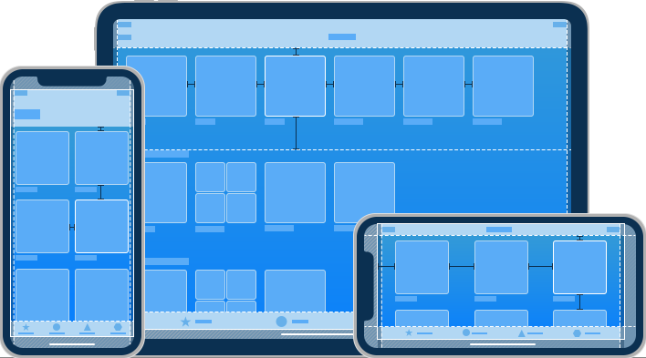

iOS Design Themes
As an app designer, you have the opportunity to deliver an extraordinary product that rises to the top of the App Store charts. To do so, you'll need to meet high expectations for quality and functionality.
Three primary themes differentiate iOS from other platforms:
-
Clarity. Throughout the system, text is legible at every size, icons are precise and lucid, adornments are subtle and appropriate, and a sharpened focus on functionality motivates the design. Negative space, color, fonts, graphics, and interface elements subtly highlight important content and convey interactivity.
-
Deference. Fluid motion and a crisp, beautiful interface help people understand and interact with content while never competing with it. Content typically fills the entire screen, while translucency and blurring often hint at more. Minimal use of bezels, gradients, and drop shadows keep the interface light and airy, while ensuring that content is paramount.
-
Depth. Distinct visual layers and realistic motion convey hierarchy, impart vitality, and facilitate understanding. Touch and discoverability heighten delight and enable access to functionality and additional content without losing context. Transitions provide a sense of depth as you navigate through content.
Design Principles
To maximize impact and reach, keep the following principles in mind as you imagine your app’s identity.
Aesthetic Integrity
Aesthetic integrity represents how well an app’s appearance and behavior integrate with its function. For example, an app that helps people perform a serious task can keep them focused by using subtle, unobtrusive graphics, standard controls, and predictable behaviors. On the other hand, an immersive app, such as a game, can deliver a captivating appearance that promises fun and excitement, while encouraging discovery.
Consistency
A consistent app implements familiar standards and paradigms by using system-provided interface elements, well-known icons, standard text styles, and uniform terminology. The app incorporates features and behaviors in ways people expect.
Direct Manipulation
The direct manipulation of onscreen content engages people and facilitates understanding. Users experience direct manipulation when they rotate the device or use gestures to affect onscreen content. Through direct manipulation, they can see the immediate, visible results of their actions.
Feedback
Feedback acknowledges actions and shows results to keep people informed. The built-in iOS apps provide perceptible feedback in response to every user action. Interactive elements are highlighted briefly when tapped, progress indicators communicate the status of long-running operations, and animation and sound help clarify the results of actions.
Metaphors
People learn more quickly when an app’s virtual objects and actions are metaphors for familiar experiences—whether rooted in the real or digital world. Metaphors work well in iOS because people physically interact with the screen. They move views out of the way to expose content beneath. They drag and swipe content. They toggle switches, move sliders, and scroll through picker values. They even flick through pages of books and magazines.
User Control
Throughout iOS, people—not apps—are in control. An app can suggest a course of action or warn about dangerous consequences, but it’s usually a mistake for the app to take over the decision-making. The best apps find the correct balance between enabling users and avoiding unwanted outcomes. An app can make people feel like they’re in control by keeping interactive elements familiar and predictable, confirming destructive actions, and making it easy to cancel operations, even when they’re already underway.